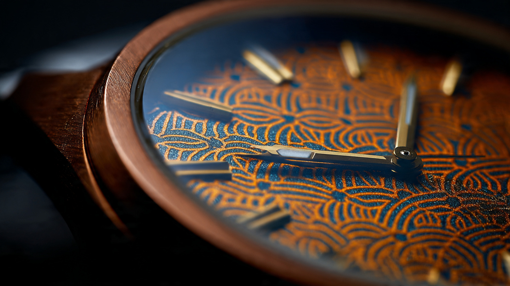

Twenty-Seven Pieces, One Lattice: How Kigumi Joinery Logic Built the MRG-B2100D Dial

Walk through Horyu-ji, the Buddhist temple complex in Nara Prefecture that has stood since the seventh century, and you will notice something missing from its wooden frame. Nails. No iron fasteners hold the pagoda's five stories together. Instead, interlocking timber joints called kigumi distribute load across geometric contact surfaces, allowing each beam to grip its neighbor through shape alone. When an earthquake hits, the structure flexes rather than fractures. Wood moves against wood, absorbing energy that would shatter a rigid connection.
Casio's engineers at Yamagata Casio, the factory in northern Japan where every MR-G watch is assembled, looked at that principle and asked a question that sounds absurd on its surface: what if a watch dial worked the same way?
Not structurally. A 49-millimeter wristwatch does not need to survive a magnitude 7 earthquake. But visually and functionally, the MRG-B2100D borrows from kigumi in ways that go beyond decorative homage. Its dial is a latticework of interwoven metallic ridges, perforated with microscopic holes that serve a dual purpose. Aesthetically, they create the geometric depth of a traditional lattice screen. Practically, they allow sunlight and indoor light to pass through to the solar cell underneath, powering the watch without any visible solar panel on the dial face.
Meanwhile, the bezel surrounding that dial consists of 27 separate titanium and alloy components, each polished individually before assembly. Where a standard G-Shock wraps its module in a single injection-molded resin shell, the MRG-B2100D builds its armor from discrete parts fitted together with rubber and resin buffers between them. Impact energy that would crack a monolithic structure instead dissipates through the interfaces between components, absorbed by the elastomeric layers that Casio calls its Multi-Guard Structure.
One is a dial inspired by temple carpentry. Another is a bezel engineered like a crumple zone. Both draw from the same foundational insight: sometimes, dividing a structure into many connected pieces makes it stronger than leaving it as one.
Kigumi in Metal: How Yamagata Casio Built the Lattice Dial
Kigumi is not a single technique. It is a family of joinery methods developed during Japan's Nara period, roughly the eighth century, and refined over the following twelve hundred years by generations of miyadaiku, the master carpenters responsible for shrine and temple construction. A properly cut kigumi joint works to tolerances of 0.1 to 0.2 millimeters using hand tools. Load transfers through multiple contact points simultaneously, distributing stress across the grain in ways that maximize wood's natural tensile strength while avoiding its weaknesses in compression perpendicular to the grain.
Translating that into a watch dial required Yamagata Casio's engineers to solve a problem that does not exist in wood: light transmission. A kigumi lattice screen in a temple admits air and diffused light through its geometric openings. A solar watch dial must admit enough photons to generate electrical current, typically requiring at least 200 lux at the cell surface for reliable charging. But if the openings are too large or too numerous, the dial looks perforated rather than textured, and the illusion of solid latticework collapses.
Yamagata Casio's solution was to perforate the dial with holes small enough to be invisible at conversational distance but large enough, in aggregate, to pass sufficient light. Each hole is positioned within the lattice pattern's natural intersections, where the eye expects shadow or depth. Under magnification, the perforations are clearly visible. At arm's length, they disappear into the dial's three-dimensional texture, read as shadow rather than absence.
Achieving this required precision stamping and etching that the factory had developed for prior MR-G models but had never applied to a decorative dial surface. Earlier MR-G watches used conventional printed or machined dials with no light-transmission requirements. On those models, the solar cell sat behind a partially transparent dial coating. On the MRG-B2100D, the dial is opaque metallic with a black lacquer finish on the lattice ridges. Light reaches the cell only through the perforations. If their total aperture area fell below a critical threshold, the watch would not charge reliably in indoor lighting. If it exceeded that threshold, the lattice effect would weaken visually.
Casio has not published the total aperture percentage. But hands-on examination reveals that charging performance in typical office lighting (300 to 500 lux) is consistent with other MR-G solar models, suggesting the aperture design hit its engineering target without compromise.
Why Twenty-Seven Pieces Instead of One
Standard G-Shock construction is a masterpiece of simplicity. A resin case wraps around the module like a helmet, absorbing shock through material deformation. Resin flexes. It compresses under impact and returns to shape. For a $100 watch, it is brilliant engineering. For a $4,000 titanium watch, it creates a problem: titanium does not flex like resin. A monolithic titanium bezel transfers impact energy directly to the module, converting shock absorption into shock transmission.
Casio first solved this with the MRG-B5000 in 2022, splitting its square bezel into 25 components. With the MRG-B2100D, the round case format pushed the count to 27. Each piece is machined and finished separately, then assembled with elastomeric gaskets and buffers occupying the interfaces. When the watch hits a hard surface, the bezel components shift microscopically against each other, and the buffers absorb kinetic energy through deformation. In effect, Casio recreated the energy-dissipating properties of resin in a full-metal construction by turning the gaps between parts into distributed shock absorbers.
Polishing is the second reason for the multi-component approach. A single-piece round bezel has internal corners and recessed surfaces that no polishing wheel can reach. Hand-polishing a monoblock bezel produces inconsistent finishes in tight areas, visible as dull spots or irregular reflections under direct light. Splitting the bezel into 27 parts lets artisans polish each surface individually before assembly. Flat faces get a brushed hairline finish. Beveled edges get a mirror polish. Dimpled bracelet sections, which mimic the classic CasiOak pattern, are constructed from separate components that receive circular polishing before being fitted into the bracelet structure.
Assembly is sequential and manual. Each bezel component is positioned, its buffer inserted, and the next piece added in a defined order. Yamagata Casio's production line handles this process with the same approach that applies to the rest of the MR-G range: skilled technicians, not robots. At current production volumes, automation would cost more than the labor it replaced.
COBARION on Top, DAT55G Below
Not all 27 components are the same alloy. Casio uses a three-material hierarchy, placing the hardest alloys where abrasion risk is highest and reserving lighter, more workable titanium for structural components.
At the outermost surface, the top bezel ring is COBARION, a cobalt-chromium alloy developed at Tohoku University by Professor Akihiko Chiba's research group and produced exclusively by Eiwa Corporation, a small manufacturer in Iwate Prefecture. COBARION is approximately four times harder than pure titanium, with a surface reflectance comparable to platinum. Its development story is unlikely: Eiwa was originally a Fiber Reinforced Plastic processor that pivoted to metallurgy after the 2008 financial crisis. Professor Chiba had developed the alloy for medical implant applications, but the commercialization path stalled. Eiwa exhibited the material at a manufacturing trade show, where a Casio engineer recognized its potential for watch bezels. COBARION debuted on the MRG-G2000CB in 2017 and has appeared on every MR-G since.
Working COBARION into bezel components is labor-intensive. Standard stamping and pressing equipment cannot shape it because of its extreme hardness. Each bezel piece must be wire-cut from plate stock and then machined to final dimensions. Mistakes during the finishing process can alter the alloy's crystalline structure irreversibly, requiring the material to be melted down and reprocessed. After machining, Casio applies a titanium carbide (TiC) coating to enhance abrasion resistance further.
Bracelet links use DAT55G, a titanium alloy produced by Daido Steel. At roughly three times the hardness of pure titanium, DAT55G sits between COBARION and standard Ti64 in the hardness hierarchy. It is more workable than COBARION but harder than the Ti64 alloy used for the case body, caseback, buttons, and crown. This tiered approach puts maximum scratch resistance where contact is most frequent (bezel, then bracelet) while keeping the case manufacturable and lightweight.
From Digital to Analog: A Different Engineering Challenge
Previous MR-G watches were digital, inheriting the square case geometry of the original DW-5000C from 1983. Converting the MR-G concept to the round GA-2100 "CasiOak" platform introduced complications that the square format avoided.
Round bezels require continuous curvature in every component. On the MRG-B5000, each bezel piece was essentially flat or had a single-axis curve. On the MRG-B2100D, the 27 bezel components must follow a compound curve that tracks the case's cylindrical profile while also accommodating the octagonal design language of the 2100 series. Transitioning from flat surfaces to compound curves increased the machining complexity per piece and tightened the tolerance requirements for assembly alignment.
An analog dial also imposes constraints that a digital display does not. Hands must sweep freely above the lattice dial without catching on the textured surface. Casio addressed this with careful height management, positioning the kigumi ridges low enough that hand clearance remains generous even at the dial's most elevated points. Lume application presented another challenge: applied indices on the MRG-B2100D are coated with a luminescent material that must be thick enough for adequate glow duration but thin enough to avoid disrupting the lattice pattern's visual coherence.
Crown design received similar attention. Every MR-G uses a screw-down crown for water resistance, but on the MRG-B2100D, a special construction keeps the engraved MR-G logo horizontally aligned when the crown is in its locked position. Protective parts built into the crown and button assembly absorb lateral impacts that might otherwise bend the stem or crack the gasket seat.
Hanada-Iro: Color as Engineering Decision
MRG-B2100D-2A, the variant released in January 2026, is finished in hanada-iro, a traditional Japanese blue derived from indigo dyeing. Historically, hanada-iro was reserved for items of rank: military commanders' helmets, ceremonial textiles, and aristocratic furnishings. On the MRG-B2100D, it appears as a blue dial treatment that shifts tone depending on lighting angle, transitioning from deep navy under overhead fluorescent light to a lighter, almost teal shade in low-angle sunlight.
Casio describes the inspiration as a five-story pagoda viewed through morning mist in Yamagata Prefecture, the region where the factory operates. Strip away the marketing language and the engineering question is straightforward: how do you achieve an angle-dependent color shift on a metallic lattice dial without obscuring the kigumi texture? A thick lacquer coat would fill the lattice grooves, destroying the three-dimensional effect. A thin coating would lack the optical depth needed for the color to shift with viewing angle.
On the silver MRG-B2100D-1A, the lattice ridges receive a black lacquer treatment that contrasts with the brushed metallic base. On the blue 2A variant, the lacquer formulation changes to produce the hanada-iro hue while maintaining the same thickness profile. Both versions preserve the lattice depth at the cost of manufacturing complexity: each dial requires multiple coating passes with intermediate quality inspections to verify that no groove has been partially filled.
Solar, Bluetooth, Radio: Standard MR-G Infrastructure
Beneath the kigumi dial and the 27-piece bezel sits the same functional platform Casio uses across its connected G-Shock lineup. Tough Solar charging handles power management. Bluetooth Low Energy links to a smartphone app for automatic time correction, world time, and alarm configuration. Multi-Band 6 radio wave reception synchronizes the quartz oscillator with atomic clock signals from transmitters in Japan (two stations), the United States, the United Kingdom, Germany, and China.
Sapphire crystal with an anti-reflective coating covers the dial. Water resistance is 200 meters. A Super Illuminator LED provides readability in darkness. None of these features are unique to the MRG-B2100D. What separates this watch from a $250 GA-B2100 is not the movement or the technology. It is the 27-piece bezel, the COBARION and DAT55G alloys, the kigumi-patterned dial with its calibrated perforations, and the hand-polishing work at Yamagata Casio. Every functional capability ships in a resin watch at a fraction of the cost. What you pay for in the MR-G is the physical construction: materials science, precision finishing, and a structural philosophy borrowed from buildings that have survived thirteen centuries of earthquakes.
One Principle at Two Scales
Kigumi endures because it distributes force. A single nail concentrates stress at one point in the wood. An interlocking joint spreads that stress across an entire surface. When the ground shakes, the nail pulls free while the joint absorbs and redirects.
Casio's Multi-Guard Structure works identically, just with titanium alloys instead of cypress beams. Impact force that would crack a monolithic case instead spreads across 27 interfaces, absorbed by elastomeric buffers that convert kinetic energy into heat. Neither system fights the force. Both systems accommodate it by giving the structure room to move.
A 1,300-year-old carpentry technique and a 2026 titanium wristwatch arrive at the same answer to the same problem. If that is not efficient design, nothing is.
Sources
- Casio Computer Co., Ltd., "Casio to Release MR-G Featuring Traditional Japanese Hanada-iro Blue," press release, January 8, 2026.
- G-Shock Official, "MRG-B2100D-2A Product Features," gshock.casio.com, 2026.
- G-Shock Magazine / Hodinkee, "The G-Shock MRG-B2100D," product editorial, 2024.
- G-Shock Official, "The Pillars of Protection, Vol. 3: Kigumi," gshock.casio.com.
- Arch2O, "How Japanese Wood Joints Work Without Nails: The Ancient Art of Kigumi in Modern Architecture," 2025.
- Daido Steel Co., Ltd., "Titanium Alloy for Medical Applications," daido.co.jp.